CHEBFUN GUIDE 8: CHEBFUN PREFERENCES
Lloyd N. Trefethen, November 2009, revised February 2011
Contents
- 8.1 Introduction
- 8.2 domain: the default domain
- 8.3 splitting: splitting on/off
- 8.4 splitdegree: degree limit in splitting on mode
- 8.5 maxdegree: maximum degree
- 8.6 minsamples: minimum number of sample points
- 8.7 resampling: resampling on/off
- 8.8 eps: Chebfun constructor tolerance
- 8.9 Additional preferences
8.1 Introduction
Like any software package, Chebfun is based on certain design decisions. Some of these are fixed, like the principle of representing functions by Chebyshev expansions. Others are adjustable, like the maximum number of points at which a function will be sampled before Chebfun gives up trying to resolve it. A starting point in exploring these matters is to type the command help chebfunpref. (For chebops, there is help cheboppref.) Or just to see the list of preferences, you can simply execute chebfunpref. Here we execute it with the argument 'factory' to ensure that all preferences are set to their factory values:
chebfunpref('factory')
In this chapter of the Chebfun Guide we explore some of these adjustable preferences, showing how special effects can be achieved by modifying them. Besides showing off some useful techniques, this review will also serve to deepen the user's understanding of Chebfun by poking about a bit at its edges.
A general point to be emphasized is the distinction between creating a chebfun directly from the constructor and creating one by operating on previous chebfuns. In the former case we can include preferences directly in the constructor command, and we recommend this as good practice:
f = chebfun('x.^x',[0,1],'splitting','on');
In the latter case, however, one must (say) turn the preference on and off again.
x = chebfun('x',[0,1]); splitting on f = x.^x; splitting off
8.2 domain: the default domain
Like Chebyshev polynomials themselves, chebfuns are defined by default on the domain [-1,1] if no other domain is specified. However, this default choice of the default domain can be modified. For example, we can work with trigonometric functions on [0,2pi] conveniently like this:
chebfunpref('domain',[0 2*pi]) f = chebfun(@(t) sin(19*t)); g = chebfun(@(t) cos(20*t)); plot(f,g), axis equal, axis off

8.3 splitting: splitting on/off
Perhaps the preference that users wish to control most often is the choice of splitting off or on. Splitting off is the factory default, though splitting on was the default in Chebfun Version 2.
In both splitting off and splitting on modes, a chebfun may consist of a number of pieces, called funs. For example, even in splitting off mode, the following sequence makes a chebfun with four funs:
chebfunpref('factory'); x = chebfun(@(x) x); f = min(abs(x),exp(x)/6); format short, f.ends plot(f)
ans = -1.0000 -0.1443 0 0.2045 1.0000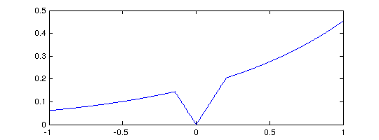
One breakpoint is introduced at x=0, where the constructor recognizes that abs(x) has a zero, and two more breakpoints are introduced at -0.1443 and at 0.2045, where it recognizes that abs(x) and exp(x)/6 will intersect.
The difference between splitting off and splitting on pertains to additional breakpoints that may be introduced in the more basic chebfun construction process, when the constructor makes a chebfun solely by sampling point values. For example, suppose we try to make the same chebfun as above from scratch, by sampling an anonymous function, in splitting off mode. We get a warning message:
ff = @(x) min(abs(x),exp(x)/6); f = chebfun(ff);
Warning: Function not resolved, using 65537 pts. Have you tried 'splitting on'?
With splitting on, Chebfun's built-in edge detector quickly finds the singular points and introduces breakpoints there:
f = chebfun(ff,'splitting','on'); f.ends
ans = -1.0000 -0.1443 0.0000 0.2045 1.0000
This example involves specific points of singularity, which the constructor has duly located. In addition to this, in splitting on mode the constructor will subdivide intervals recursively at non-singular points when convergence is not taking place fast enough. For example, with splitting off we cannot successfully construct a chebfun for the square root function on [0,1] (unless we use exponentials or mappings as described in the next chapter):
f = chebfun(@(x) sqrt(x),[0 1]);
Warning: Function not resolved, using 65537 pts. Have you tried 'splitting on'?
With splitting on, however, all is well:
f = chebfun(@(x) sqrt(x),[0 1],'splitting','on'); length(f) format long, f((.1:.1:.5)'.^2)
ans = 586 ans = 0.100000000000000 0.200000000000000 0.300000000000000 0.400000000000000 0.500000000000000
Inspection reveals that Chebfun has broken the interval into a succession of pieces, each 100 times smaller than the next:
f.ends
ans =
Columns 1 through 3
0 0.000000000100000 0.000000010000000
Columns 4 through 6
0.000001000000000 0.000100000000000 0.010000000000000
Columns 7 through 8
0.505000000000000 1.000000000000000
In this example all but one of the subdivisions have occurred near an endpoint, for the edge detector has estimated that the difficulty of resolution lies there. For other functions, however, splitting will take place at midpoints. For example, here is a function that is complicated throughout [-1,1], especially for larger values of x.
ff = @(x) sin(x).*tanh(3*exp(x).*sin(15*x));
With splitting off, it gets resolved by a global polynomial of rather high degree.
f = chebfun(ff); length(f) plot(f)
ans =
1409
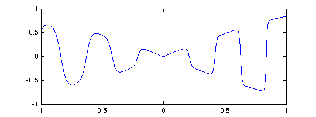 With splitting on, the function is broken up into pieces, and there is some reduction in the overall length:
f = chebfun(ff,'splitting','on'); length(f) format short, f.ends
ans =
819
ans =
Columns 1 through 7
-1.0000 -0.7500 -0.5000 -0.2500 0 0.2500 0.3750
Columns 8 through 12
0.5000 0.6250 0.8125 0.8750 1.0000
When should one use splitting off, and when splitting on? If the goal is simply to represent complicated functions, especially when they are more complicated in some regions than others, splitting on sometimes has advantages. An example is given by the function above posed on [-3,3] instead of [-1,1]. With splitting off, the global polynomial has a degree in the tens of thousands:
f3 = chebfun(ff,[-3 3]); length(f3) plot(f3)
ans =
16380
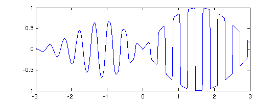 With splitting on the representation is much more compact:
f3 = chebfun(ff,[-3 3],'splitting','on'); length(f3)
ans =
2779
On the other hand, splitting off mode has advantages of robustness. In particular, operations involving derivatives generally work better when functions are represented by global polynomials, and chebops for the most part requires this. Also, for educational purposes, it is very convenient that Chebfun can be used so easily to study the properties of pure polynomial representations.
8.4 splitdegree: degree limit in splitting on mode
When intervals are subdivided in splitting on mode, as just illustrated, the parameter splitdegree determines where this will happen. With the factory value splitdegree=128, splitting will take place if a polynomial of degree 128 proves insufficient to resolve a fun. Let us confirm for the chebfun f constructed a moment ago that the degrees of the individual funs are all less or equal than 128:
f.funs
ans = vector of funs length of fun1: 66 length of fun2: 80 length of fun3: 88 length of fun4: 87 length of fun5: 120 length of fun6: 30 length of fun7: 95 length of fun8: 59 length of fun9: 84 length of fun10: 76 length of fun11: 34
Alternatively, suppose we wish to allow individual funs to have degree up to 512. We can do that like this:
f = chebfun(ff,'splitting','on','splitdegree',512); length(f) format short, f.ends f.funs
ans =
1159
ans =
-1.0000 0 0.5000 0.7500 1.0000
ans = vector of funs
length of fun1: 344
length of fun2: 300
length of fun3: 238
length of fun4: 277
8.5 maxdegree: maximum degree
As just mentioned, in splitting off mode, the constructor tries to make a global chebfun from the given string or anonymous function. For a function like abs(x) or sign(x), this will typically not be possible and we must give up somewhere. The parameter maxdegree, set to 2^16 in the factory, determines this giving-up point.
For example, here's what happens normally if we try to make a chebfun for sign(x).
f = chebfun('sign(x)');
Warning: Function not resolved, using 65537 pts. Have you tried 'splitting on'?
Suppose we wish to examine the interpolant to this function through 50 points instead of 65537. One way is like this:
f = chebfun('sign(x)',50);
plot(f)
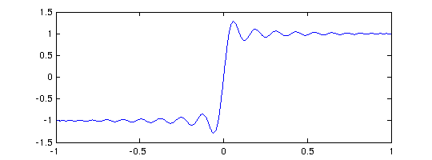 Notice that no warning message is produced since we have asked explicitly for exactly 50 points. On the other hand we could also change the default maximum to this number (or more precisely the default degree to one less than this number), and then there would be a warning message:
f = chebfun('sign(x)','maxdegree',49);
Warning: Function not resolved, using 50 pts. Have you tried 'splitting on'?
Perhaps more often one might wish to adjust this preference to enable use of especially high degrees. On the machines of 2011, Chebfun is perfectly capable of working with polynomials of degrees in the millions. The function abs(x)^(3/2) on [-1,1] provides a nice example, for it is smooth enough to be resolved by a global polynomial, provided it is of rather high degree:
tic f = chebfun('abs(x).^1.5','maxdegree',1e6); lengthf = length(f) format long, sumf = sum(f) plot(f) toc
lengthf =
127163
sumf =
0.799999999999964
Elapsed time is 0.617150 seconds.
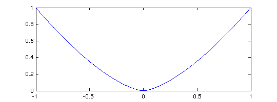 (Much more efficient ways of resolving this function, by eliminating the singularity, are described in Chapter 9.)
8.6 minsamples: minimum number of sample points
At the other end of the spectrum, the parameter minsamples determines the minimum number of points at which a function is sampled during the chebfun construction process, and the factory value of this parameter is 9. This does not mean that all chebfuns have length at least 9. For example, if f is a cubic, then it will be sampled at 9 points, Chebyshev expansion coefficients will be computed, and 5 of these will be found to be of negligible size and discarded. So the resulting chebfun is a cubic, even though the constructor never sampled at fewer than 9 points.
chebfunpref('factory'); f = chebfun('x.^3'); lengthf = length(f)
lengthf =
4
More generally a function is sampled at 9, 17, 33,... points until a set of Chebyshev coefficients are obtained with a tail judged to be negligible.
Like any process based on sampling, this one can fail. For example, here is a success:
splitting off f = chebfun('-x -x.^2 + exp(-(30*(x-.5)).^2)'); length(f) plot(f)
ans = 307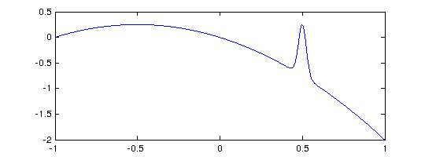
But if we change the exponent to 4, we get a failure:
f = chebfun('-x -x.^2 + exp(-(30*(x-.5)).^4)');
length(f)
plot(f)
ans =
3
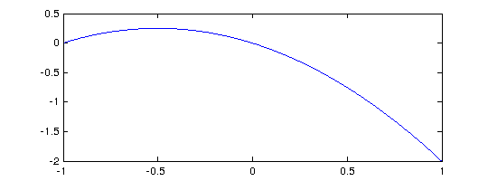 What has happened can be explained as follows. The function being sampled has a narrow spike near x = 0.5, and the closest grid points lie near 0.383 and 0.707. In the case of the exponent 2, we note that at x=0.383, exp(-(30(x-.5)^2))=4.5e-6, which is large enough to be noticed by the Chebfun constructor. On the other hand in the case of exponent 4, we have exp(-(30(x-.5)^4))=1.2e-66, which is far below machine precision. So in the latter case the constructor thinks it has a quadratic and does not try a finer grid.
If we increase minsamples, the correct chebfun is found:
chebfunpref('minsamples',17) f = chebfun('-x -x.^2 + exp(-(30*(x-.5)).^4)'); length(f) plot(f)
ans =
1064
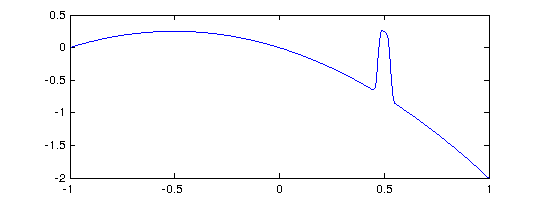 Incidentally, if the value of minsamples specified is not one greater than a power of 2, it is rounded up to the next such value. So chebfunpref('minsamples',10) would give the same result as chebfunpref('minsamples',17).
The default minsamples=9 was chosen as a good compromise between efficiency and reliability. In practice it rarely seems to fail, but perhaps it is most vulnerable when applied in splitting on mode to functions with narrow spikes. For example, the following chebfun is missing most of the spikes that should be there:
chebfunpref('factory') ff = @(x) max(.8,sin(x+x.^2)) - x/20; f = chebfun(ff,[0,10],'splitting','on'); plot(f)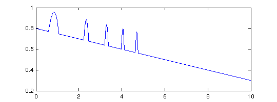
Increasing minsamples fills them in:
chebfunpref('minsamples',17) f = chebfun(ff,[0,10],'splitting','on'); plot(f)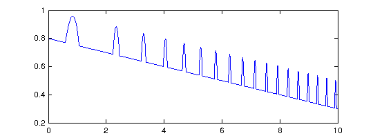
8.7 resampling: resampling on/off
We now turn to a particularly interesting preference for Chebfun geeks, relating to the very idea of what it means to sample a function.
When a chebfun is constructed, a function is normally sampled at 9, 17, 33,... Chebyshev points until convergence is achieved. Now Chebyshev grids are nested, so the 17-point grid, for example, only contains 8 points that are not in the 9-point grid. By default, the Chebfun constructor takes advantage of this property so as not to recompute values that have already been computed. (The default went the other way until 2009.)
For example, here is a chebfun constructed in the usual factory mode:
chebfunpref('factory');
ff = @(x) besselj(x,exp(x))
tic, f = chebfun(ff,[0 8]); toc
length(f)
ff =
@(x)besselj(x,exp(x))
Elapsed time is 0.057835 seconds.
ans =
3790
Let us see what happens if we set 'resampling on', so that previously computed values are not reused:
tic, f = chebfun(ff,[0 8],'resampling','on'); toc length(f)
Elapsed time is 0.085893 seconds.
ans =
3788
One might wonder why 'resampling on' is an option at all, but in fact, it introduces some very interesting possibilities. What if the "function" being sampled is not actually a fixed function, but depends on the grid? For example, consider this prescription:
ff = @(x) length(x)*sin(2*x);
The values of f at any particular point will depend on the length of the vector in which it is embedded! What will happen if we try to make a chebfun, disabling the "sampletest" feature that is usually applied by the constructor as a safety test? The constructor tries the 9-point Chebyshev grid, then the 17-point grid, then the 33-point grid. On the last of these it finds the Chebyshev coefficients are sufficiently small, and proceeds to truncate to length 18. We end up with a chebfun of length 18 that precisely matches the function 33sin(2x).
f = chebfun(ff,'sampletest',0,'resampling','on'); length(f) max(f) plot(f,'.-')
ans =
18
ans =
33.000000000000014
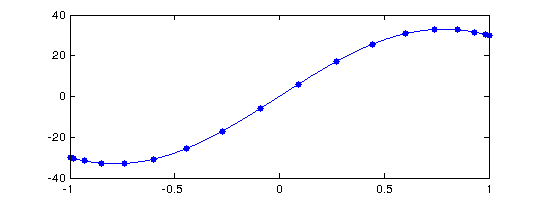 This rather bizarre example encourages us to play further. What if we change length(x)*sin(2*x) to sin(length(x)*x)? Now there is no convergence, for no matter how fine the grid is, the function is underresolved.
hh = @(x) sin(length(x)*x); h = chebfun(hh,'sampletest',0,'resampling','on');
Warning: Function not resolved, using 65537 pts. Have you tried 'splitting on'?
Here is an in-between case where convergence is achieved on the grid of length 65, and the resulting chebfun then trimmed to length 44.
kk = @(x) sin(length(x).^(2/3)*x); k = chebfun(kk,'sampletest',0,'resampling','on'); length(k) plot(k,'.-')
ans =
44
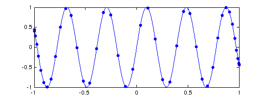 Are such curious effects of any use? Yes indeed, they are at the heart of the chebop system. When the chebop system solves a differential equation by a command like u = L\f, for example, the chebfun u is determined by a "sampling" process in which a matrix problem obtained by Chebyshev spectral discretization is solved on grids of size 9, 17, and so on. The matrices change with the grids, so the sample values for u are crucially grid-dependent. Without resampling, chebops would not work.
Besides chebops, are there other practical uses of the Chebfun resampling feature? We do not currently know the answer and would be pleased to hear from users who may have ideas.
8.8 eps: Chebfun constructor tolerance
One of the controllable preferences is all too tempting: you can weaken the tolerance used in constructing a chebfun. The chebfunpref parameter eps is set by default to machine precision:
chebfunpref('eps')
ans =
2.220446049250313e-16
However, one can change this with a command like chebfunpref('eps',1e-6).
There are cases where weakening the tolerance makes a big difference. For example, this happens in certain applications in 2D and in certain applications involving differential equations. (Indeed, the Chebfun differential equations commands have their own tolerance control strategies.) However, Chebfun does such a good job at resolving many functions that the eps-adjustment feature is not as useful as you might imagine, and we recommend that users not change eps unless they are having real problems with standard precision.
8.9 Additional preferences
Information about additional Chebfun preferences can be found by typing help chebfunpref. Here is a quick summary. In most cases various keywords are permitted such as 'on' or 1 or true, 'off' or 0 or false.
'sampletest' controls whether a function is evaluated at an extra point as a safety check of convergence. With the default 'on' value, this test is indeed carried out.
'blowup' relates to the construction of chebfuns that diverge to infinity, as described in Chapter 9. blowup=0 is used for no singularities, blowup=1 if for functions with poles (blowups with a negative integer power) and blowup=2 for functions with branch points (blowups with an arbitrary power).
'chebkind' is set by default to 2, but can be changed to 1 to force Chebfun to use Chebyshev points of the first kind (i.e., roots of Chebyshev polynomials) rather than the second kind (extrema). This feature is experimental and may not do what you expect.
'extrapolate" can be turned on to avoid evaluating functions at endpoints if this may lead to trouble with NaN or inf. For example, here we get a warning message because the value is 0 at the x=0 and 1 elsewhere,
f = chebfun('sign(x)',[0 1]);
Warning: Function not resolved, using 65537 pts. Have you tried 'splitting on'?
whereas here there is no difficulty:
f = chebfun('sign(x)',[0 1],'extrapolate','on');
'plot_numpts', set by default to 2001, controls how many points a function is sampled at for plotting.
'ADdepth' stands for 'automatic differentiation depth', and limits how deep an automatic differentiation stack can go in order to limit memory use.